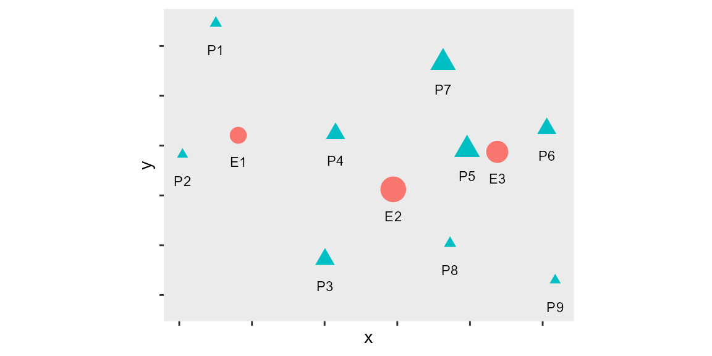

AccessPack-Conventional
AccessPack-Conventional.RmdConventional Accessibility
We have been experimenting with proportional allocation in accessibility measures, and have discussed the concept of spatial availability. Briefly, consider the following conventional accessibility measure \(A_i\) : \[ A_i = \sum_{j=1}^JW_jf(c_{ij}) \]
Where, - \(i\) is a set of origin locations. - \(j\) is a set of destination locations. - \(W_j\) is the number of opportunities at location \(j\). These are opportunities for activity and add some sort of supply to the area; - \(c_{ij}\) is a measure of the cost of moving between \(i\) and \(j\) - \(f(\cdot)\) is an impedance (or distance-decay) function (a monotonically non-increasing or decreasing function of \(c_{ij}\)).
In this way, the conventional accessibility value \(A_i\) is the weighted sum of opportunities that can be reached from location \(i\). Summing the opportunities in the neighborhood of \(i\) (the neighborhood is defined by the impedance function) estimates of the total number of opportunities that can be reached from \(i\) at a certain cost. It is well known that this is a gravity-type measure of accessibility, and it is a widely used tool in transportation studies. This is our starting point.
The following is a toy example in which first we will calculate conventional accessibility, \(A_i\), and explore how this measure falls short. We will then calculate Spatial Availability, our proposed accessibility measure, and discuss how it improves interpretability.
Numerical Toy Example
In this section we present a numerical toy example to calculate conventional accessibility \(A_i\).
Load packages needed for the example:
library(AccessPack)
library(dplyr)
library(ggplot2)
library(kableExtra)
library(patchwork)
library(sf)This is the setup for the example: three employment centers and nine population centers.
ggplot(data = toy_sim_zones) +
geom_sf(aes(color = type,
shape = type,
size = number)) +
geom_sf_text(aes(label = id_short),
size = 3,
nudge_y = -600) +
scale_size(range = c(2, 7)) +
theme(axis.text = element_blank(),
legend.position = "none",
panel.grid = element_blank())
This is the distribution of jobs and population:
toy_sim_zones %>%
st_drop_geometry() %>%
mutate(fig = "") %>%
kable(format = "latex",
booktabs = TRUE) %>%
column_spec(5, image = "images/figure-1.png") %>%
collapse_rows(columns = 5, latex_hline = "major", valign = "middle")Now, let’s calculate conventional accessibility \(A_i\) where we will yield how many jobs (opportunities) are accessibility to each population center.
As our \(c_{ij}\) is unitless ‘distance’; let’s assume an impedance function is simply a binary switch in which on jobs which are at distances equal to or less than the mean (3692.0555976 units) from population centers are considered; meaning any employment center which is further than than this mean is not considered in evaluating the job accessibility for each origin.
# using the origin-destination table (OD) of all origin to destination trips; filter in only jobs which are mean distance or less away from a population center and sum number of jobs available in each origin (population center)
c_accessibility <- AccessPack::toy_od_table %>%
filter(distance <= mean(distance)) %>%
group_by(Origin) %>%
summarise(c_access_jobs = sum(Jobs))
#pass conventional accessibility calculation into the spatial object (toy_sim_zones)
toy_sim_zones_access <- toy_sim_zones %>%
merge(c_accessibility, by.x ="id", by.y = "Origin", all.x=T) Plot origin conventional accessibility
toy_c_access_jobs_plot <- ggplot() +
geom_sf(data = toy_sim_zones_access %>%
filter(type == "population"),
aes(color = c_access_jobs,
size = c_access_jobs),
shape = 17) +
geom_sf(data = toy_sim_zones_access %>%
filter(type == "population"),
aes(size = c_access_jobs),
shape = 2) +
geom_sf(data = toy_sim_zones_access %>%
filter(type == "jobs"),
aes(size = number *3,
shape = )) +
scale_color_distiller(palette = "OrRd",
direction = 1) +
guides(size = "none")
toy_c_access_jobs_plot Here we see of the three employment centers (black dots), the bigger the dot the larger number of jobs available. We also see nine population centers (triangles), where the bigger the triangle the larger the population and the darker the orange the more ‘job accessibility’ that center has access to.
Population centers (triangles) in the middle of the map have access to all three employment centers and thus have the highest amount of job accessibility (i.e. Population center P4 has the maximum job accessibility 4500);
Population centers (triangles) near the left edge of the map (only in proximity to the small employment center) have the least amount of job accessibility (i.e. Population centers P1, P2 has the minimum job accessibility 750);
What are the issues?
What does a maximum of 4500 and a minimum of 750 job accessibility mean exactly? We can normalize this value by considering population centers, employment centres, or the average global population or jobs. However, the value is not sensitive to the population at the origin seeking the opportunity (in this case jobs). For this reason, the value of \(A_i\) is difficult to interpret.
This is where our proposed spatial availability measure is introduced. In the following five sections we will explore this new measure using the toy example introduced. First, we will describe the measure. Second, we will calculate the spatial availability from the perspective of the population. Then, we will calculate the spatial availability from the perspective of the employment centers. Next, we calculate the spatial availability for a segment of specialized working population. Finally, we will compare the conventional accessibility calculation to the proposed spatial availability.
Spatial Availability
As we have discussed proportional allocations (see for instance Paez, Higgins, Vivona, 2019), it has become increasingly clear that a lot of multiple-counting happens when calculating conventional accessibility \(A_i\) for \(i=1,\cdots,n\), since every opportunity that can be reached from every \(i\) enters the sum. This obscures the interpretability of \(A_i\) and fails to answer questions like: “so I live in a population center with maximum job accessibility… but how many jobs can I actually access?”
For this reason, we have thought of a related concept that we are provisionally calling spatial availability, and that we think of as a singly-constrained measure of accessibility.
How does this work? It all comes down to proportional allocation. We wish to allocate opportunities proportionally, based on the number of size of, and the distance to, the demand for opportunities.
This framework is appropriate for non-divisible opportunities. Examples of non-divisible opportunities are jobs (when a person takes up a job, the same job is no longer available to anyone else), seats at schools (once a seat has been taken, it is no longer available to another student). From a different perspective, employers may see workers as opportunities, but when a worker takes a job, they are no longer in the available pool of candidates.
We distinguish between opportunities and demand.
To illustrate our analytical framework, we will think of demand as ‘population’ and opportunities as ‘jobs’.
We begin with allocation based on demand (the number of individuals in the population in the labor market). Consider an employment center \(j\) with \(W_j^r\) jobs of type \(r\). There are also \(K\) population centers in the region. To allocate the jobs proportionally based on the population of each center we define the following proportional allocation factor: \[ f^p_{ij} = \frac{P_{i\in r}^\alpha}{\sum_{k=1}^K P_{k\in r}^\alpha} \] where \(f^p_{ij}\) is a factor to proportionally allocate a share of the jobs at \(j\) to population center \(i\). On the right hand side of the equation, \(P_{k\in r}\) is the population at location \(k\) eligible for taking jobs of type \(r\) (maybe those with a certain level of training, or in a designated age group). Here we add a parameter \(\alpha\) that can be used to modulate the effect of size in the calculations. The summation in the bottom is over \(k=1,\cdots,K\), the number of population centers in the region. The factors \(f_{kj}^p\) satisfy the property that \(\sum_k^{K} f^p_{kj} = 1\).
The share of jobs allocated to (i.e., available for) each population center is: \[ V_{kj} = W_jf^p_{kj} \] and since \(\sum_k^{K} f^p_{kj} = 1\) it follows that: \[ \sum_{k=1}^K V_{kj} = W_j \]
In other words, the number of jobs is preserved.
As an example, consider an employment center \(j\) in a region with two population centers (say \(j\) and \(k\)). For simplicity, assume that all jobs in the population centers are eligible for the population in this region. The allocation factors for the jobs at \(j\) would be: \[ \begin{array}{l}\ f^p_{ij} = \frac{P_i ^\alpha}{P_i^\alpha + P_k^\alpha}\\ f^p_{kj} = \frac{P_k^\alpha}{P_i^\alpha + P_k^\alpha}\\ \end{array} \]
Suppose that there are three hundred jobs in the employment center (\(W_j = 300\)), and that the populations are \(P_j=240\) and \(P_k=120\). The jobs would be allocated as follows (assuming that \(\alpha=1\)): \[ \begin{array}{l}\ V_{ij} = W_j\frac{P_i^\alpha}{P_i^\alpha + P_k^\alpha} = 300\frac{240}{240 + 120} = 300\frac{240}{360} = 200\\ V_{kj} = W_j\frac{P_k^\alpha}{P_i^\alpha + P_k^\alpha} = 300\frac{120}{240 + 120} = 300\frac{120}{360} = 100 \\ \end{array} \] Proportionally more jobs are allocated to the bigger center and the total number of jobs is preserved (\(\sum_{k=1}^K W_{kj} = W_j\)).
The proportional allocation factors above account for the capacity of the employment centers, but they do not account for their location relative to the population centers. The proportional allocation procedure above is insensitive to how far population center \(i\) is from employment center \(j\). To account for this effect we can define a second set of allocation factors based on distance to the employment centers. These are defined as: \[ f^d_{ij} = \frac{f(c_{ij})}{\sum_{k=1}^K f(c_{kj})} \] where \(c_{ij}\) is the distance/(travel time, etc.) to employment center \(j\) from population center \(i\), and \(f(\cdot)\) is an impedance function (a monotonically decreasing function of \(c_{kj}\). The idea is that proportionally more jobs are allocated to closer locations. Assume that the impedance function is: \[ f(c_{ij}) = \exp(-\beta c_{ij}) \]
Continuing the example, suppose that the distance from population center \(i\) to employment center \(j\) is 0.6 km, and the distance from population center \(k\) to employment center \(j\) is 0.3 km. Being closer, we would expect more jobs to be allocated to the population of \(i\). The jobs would be sorted as follows: \[ \begin{array}{l}\ f^d_{ij} = \frac{\exp(-\beta D_{ij})}{\exp(-\beta D_{ij}) + \exp(-\beta D_{kj})}\\ f^d_{kj} = \frac{\exp(-\beta D_{kj})}{\exp(-\beta D_{ij}) + \exp(-\beta D_{kj})}\\ \end{array} \]
Numerically, the jobs allocated to each population center would be: \[ \begin{array}{l}\ V^d_{ij} = W_j\frac{\exp(-D_{ij})}{\exp(-D_{ij}) + \exp(-D_{kj})} = 300\frac{\exp(-0.6)}{\exp(-0.6) + \exp(-0.3)} = 3\times 0.426 = 127.8\\ V^d_{kj} = W_j\frac{\exp(-D_{kj})}{\exp(-D_{ij}) + \exp(-D_{kj})} = 300\frac{\exp(-0.3)}{\exp(-0.6) + \exp(-0.3)} = 3\times 0.574 = 172.2\\ \end{array} \] Proportionally more jobs are allocated to the closer population center. As before, the sum of jobs allocated to the population centers matches the total number of jobs available.
We can combine the proportional allocation factors by population and distance as follows: \[ V_{ij} = W_i\frac{f^p_{ij} \cdot f^d_{ij}}{\sum_{k=1}^K f^p_{kj} \cdot f^d_{kj}} \] In the example: \[ \begin{array}{l}\ V_{ij} = W_j\cdot \frac{f^o_{ij} \cdot f^d_{ij}}{f^o_{ij} \cdot f^d_{ij} + f^o_{kj} \cdot f^d_{kj}} = 300 \frac{\big(\frac{2}{3} \big) \big(0.426 \big)}{\big(\frac{2}{3} \big) \big(0.426 \big) + \big(\frac{1}{3} \big) \big(0.574 \big)} = \big(300 \big)\big(\frac{0.284}{0.475} \big)= 179.4\\ V_{kj} = W_j\cdot \frac{f^o_{kj} \cdot f^d_{kj}}{f^o_{ij} \cdot f^d_{ij} + f^o_{ik} \cdot f^d_{ik}} = 300 \frac{\big(\frac{1}{3} \big) \big(0.574 \big)}{\big(\frac{2}{3} \big) \big(0.426 \big) + \big(\frac{1}{3} \big) \big(0.574 \big)} = \big(300 \big)\big(\frac{0.191}{0.475} \big)= 120.6 \\ \end{array} \] Fewer jobs are allocated to population center \(i\) compared to the allocation by population size only, to account for the longer distance to reach those jobs. Considering distance alone allocated more jobs to the closer population center (i.e., \(k\)), but since it is smaller, it also get a smaller proportion of jobs overall. Again, the sum of jobs at employment center \(j\) that are allocated to population centers \(i\) and \(k\) simultaneously based on population and distance is preserved (i.e., \(W_{ij} + W_{kj} = W_j\)).
Availability is the sum of available jobs by origin: \[ V_i = \sum_{j=1}^J V_{ij} \]
1st Use Case: Available Jobs for The Working Population
In this section we present the same numerical example as presented above but additionally calculate spatial availability \(V_ij\). We conclude by contrasting the two measures in the final section.
First we assign an impedance function:
Next we calculate the spatial availability for each origin:
toy_od_table <- toy_od_table %>%
mutate(catch = 1) %>%
mutate(V_ij = sp_avail(.,
o_id = Origin,
d_id = Destination,
pop = Population,
opp = Jobs,
r = catch,
f = f))Verify that the sum of all jobs allocated is consistent with the total number of jobs:
sum(toy_od_table$V_ij)
#> [1] 4500
sum_jobs <- toy_od_table %>% group_by(Destination) %>% summarise(Jobs = mean(Jobs))
sum(sum_jobs$Jobs, na.rm = T)
#> [1] 4500The total number of jobs is preserved.
Aggregate available jobs by origin:
availability <- toy_od_table %>%
group_by(Origin) %>%
summarize(avail_jobs = sum(V_ij))
availability
#> # A tibble: 9 x 2
#> Origin avail_jobs
#> <fct> <dbl>
#> 1 Population 1 67.0
#> 2 Population 2 414.
#> 3 Population 3 336.
#> 4 Population 4 745.
#> 5 Population 5 2081.
#> 6 Population 6 270.
#> 7 Population 7 256.
#> 8 Population 8 316.
#> 9 Population 9 14.9Join the availability to the simulated zones:
Plot the availability estimates:
toy_avail_jobs_plot <- ggplot() +
geom_sf(data = toy_sim_zones_access %>%
filter(type == "population"),
aes(color = avail_jobs,
size = avail_jobs),
shape = 17) +
geom_sf(data = toy_sim_zones_access %>%
filter(type == "population"),
aes(size = avail_jobs),
shape = 2) +
geom_sf(data = toy_sim_zones_access %>%
filter(type == "jobs"),
aes(size = number,
shape = )) +
scale_color_distiller(palette = "OrRd",
direction = 1)+
guides(size = "none")
toy_avail_jobs_plotHow do we interpret this? Accessibility is the number of jobs that can be reached at a given cost. Here, the total number of jobs is a constant. Population center 5 has the greatest availability, due to being a large population center that is moreover relatively close to jobs.
Since the total number of jobs is constant, we can calculate the available jobs per person:
Plot the availability per person:
toy_avail_jobs_person_plot <- ggplot() +
geom_sf(data = toy_sim_zones_access %>%
filter(type == "population"),
aes(color = avail_jobs_per_person,
size = avail_jobs_per_person),
shape = 17) +
geom_sf(data = toy_sim_zones_access %>%
filter(type == "population"),
aes(size = avail_jobs_per_person),
shape = 2) +
geom_sf(data = toy_sim_zones_access %>%
filter(type == "jobs"),
shape = 16) +
scale_color_gradient2(midpoint = 1)+
guides(size = "none")
toy_avail_jobs_person_plotSome population centers have almost two jobs available per person, and others less than one job available per person. This does not mean that people are not taking some of the jobs. It means that controlling for the cost of reaching jobs, they are worse off than those with more jobs spatially available.
2nd Use Case: Available Workers for Employment Centers
We can also examine the pool of workers available to each employment center by considering the workers as opportunities and the jobs as the population.
Calculate the proportional allocation of jobs to population (referred to as \(W_ij\)):
toy_od_table <- toy_od_table %>%
mutate(catch = 1) %>%
mutate(W_ij = sp_avail(.,
o_id = Destination,
d_id = Origin,
pop = Jobs,
opp = Population,
r = catch,
f = f))Verify that the sum of all population allocated is consistent with the total number of population:
sum(toy_od_table$W_ij)
#> [1] 4525
sum_pop <- toy_od_table %>% group_by(Origin) %>% summarise(Population = mean(Population))
sum(sum_pop$Population, na.rm = T)
#> [1] 4525The total population is preserved.
Aggregate available workers by employment center:
availability <- toy_od_table %>%
group_by(Destination) %>%
summarize(avail_workers = sum(W_ij))
availability
#> # A tibble: 3 x 2
#> Destination avail_workers
#> <fct> <dbl>
#> 1 Employment Center 1 610.
#> 2 Employment Center 2 1710.
#> 3 Employment Center 3 2205.Join the availability to the toy_sim_zones_access:
toy_sim_zones_access <- toy_sim_zones_access %>%
left_join(availability,
by = c("id" = "Destination"))Plot the availability estimates:
toy_avail_workers_plot <- ggplot() +
geom_sf(data = toy_sim_zones_access %>%
filter(type == "jobs"),
aes(color = avail_workers,
size = avail_workers),
shape = 16) +
geom_sf(data = toy_sim_zones_access %>%
filter(type == "jobs"),
aes(size = avail_workers),
shape = 1) +
geom_sf(data = toy_sim_zones_access %>%
filter(type == "population"),
aes(size = number),
shape = 17) +
scale_color_distiller(palette = "OrRd",
direction = 1)+
guides(size = "none")
toy_avail_workers_plotSince the total population is constant, we can calculate the available workers per job:
toy_sim_zones_access <- toy_sim_zones_access %>%
mutate(avail_workers_per_job = avail_workers/number)Plot the population availability per job:
toy_avail_workers_job_plot <- ggplot() +
geom_sf(data = toy_sim_zones_access %>%
filter(type == "jobs"),
aes(color = avail_workers_per_job,
size = avail_workers_per_job),
shape = 16) +
geom_sf(data = toy_sim_zones_access %>%
filter(type == "jobs"),
aes(size = avail_workers_per_job),
shape = 1) +
geom_sf(data = toy_sim_zones_access %>%
filter(type == "population"),
shape = 17) +
scale_color_gradient2(midpoint = 1)+
guides(size = "none")
toy_avail_workers_job_plot3rd Use Case: Available Jobs for Specialized Working Populations
In this section we introduce catchment/eligibility constraints. Due to differences in educational achievement among the population, the jobs in Employment Center 1 can only be taken by individuals in population centers 1 and 2. Jobs in Employment Center 2 can be taken by individuals in population centers 3, 4, 5, 7, and 8. Lastly, jobs in Employment Center 3 require qualifications available only among individuals in population centers 5, 6, 8, and 9. See figure below.
Calculate the proportional allocation of opportunities but now with catchment constraint (referred to as \(V_ij_r\)):
toy_od_table <- toy_od_table %>%
mutate(V_ij_r = sp_avail(.,
o_id = Origin,
d_id = Destination,
pop = Population,
opp = Jobs,
r = catchments,
f = f))Verify that the sum of all jobs allocated is consistent with the total number of jobs:
sum(toy_od_table$V_ij_r)
#> [1] 4500
sum_jobs <- toy_od_table %>% group_by(Destination) %>% summarise(Jobs = mean(Jobs))
sum(sum_jobs$Jobs, na.rm = T)
#> [1] 4500The total number of jobs is preserved.
Repeat the availability calculation:
availability <- toy_od_table %>%
group_by(Origin) %>%
summarize(avail_r = sum(V_ij_r))
availability
#> # A tibble: 9 x 2
#> Origin avail_r
#> <fct> <dbl>
#> 1 Population 1 104.
#> 2 Population 2 646.
#> 3 Population 3 303.
#> 4 Population 4 527.
#> 5 Population 5 2173.
#> 6 Population 6 257.
#> 7 Population 7 161.
#> 8 Population 8 322.
#> 9 Population 9 7.52Join the availability to the toy_sim_zones_access:
Plot the availability estimates:
toy_avail_r_plot <- ggplot() +
geom_sf(data = catchment_1,
fill = "yellow",
alpha = 0.05) +
geom_sf(data = catchment_1,
color = "yellow",
fill = NA) +
geom_sf(data = catchment_2,
fill = "blue",
alpha = 0.05) +
geom_sf(data = catchment_2,
color = "blue",
fill = NA) +
geom_sf(data = catchment_3,
fill = "red",
alpha = 0.05) +
geom_sf(data = catchment_3,
color = "red",
fill = NA) +
geom_sf(data = toy_sim_zones_access %>%
filter(type == "population"),
aes(color = avail_r,
size = avail_r),
shape = 17) +
geom_sf(data = toy_sim_zones_access %>%
filter(type == "population"),
aes(size = avail_r),
shape = 2) +
geom_sf(data = toy_sim_zones_access %>%
filter(type == "jobs"),
aes(size = number,
shape = )) +
scale_color_distiller(palette = "OrRd",
direction = 1)+
guides(size = "none")
toy_avail_jobs_plot / toy_avail_r_plotAvailable jobs per person with catchment/eligibility conditions:
Plot the availability per person:
toy_avail_r_person_plot <- ggplot() +
geom_sf(data = catchment_1,
fill = "yellow",
alpha = 0.05) +
geom_sf(data = catchment_1,
color = "yellow",
fill = NA) +
geom_sf(data = catchment_2,
fill = "blue",
alpha = 0.05) +
geom_sf(data = catchment_2,
color = "blue",
fill = NA) +
geom_sf(data = catchment_3,
fill = "red",
alpha = 0.05) +
geom_sf(data = catchment_3,
color = "red",
fill = NA) +
geom_sf(data = toy_sim_zones_access %>%
filter(type == "population"),
aes(color = avail_r_per_person,
size = avail_r_per_person),
shape = 17) +
geom_sf(data = toy_sim_zones_access %>%
filter(type == "population"),
aes(size = avail_r_per_person),
shape = 2) +
geom_sf(data = toy_sim_zones_access %>%
filter(type == "jobs"),
shape = 16) +
scale_color_gradient2(midpoint = 1)+
guides(size = "none")
toy_avail_jobs_person_plot / toy_avail_r_person_plotComparing Conventional Accessibility and Spatial Availability
Below we compare the conventional accessibility and the initial spatial availability use case.
toy_c_access_jobs_plot <- ggplot() +
geom_sf(data = toy_sim_zones_access %>%
filter(type == "population"),
aes(color = c_access_jobs,
size = c_access_jobs),
shape = 17) +
geom_sf(data = toy_sim_zones_access %>%
filter(type == "population"),
aes(size = c_access_jobs),
shape = 2) +
geom_sf(data = toy_sim_zones_access %>%
filter(type == "jobs"),
aes(size = number * 3,
shape = )) +
scale_color_distiller(palette = "OrRd",
direction = 1) +
guides(size = "none")
toy_avail_jobs_plot <- ggplot() +
geom_sf(data = toy_sim_zones_access %>%
filter(type == "population"),
aes(color = avail_jobs,
size = avail_jobs),
shape = 17) +
geom_sf(data = toy_sim_zones_access %>%
filter(type == "population"),
aes(size = avail_jobs),
shape = 2) +
geom_sf(data = toy_sim_zones_access %>%
filter(type == "jobs"),
aes(size = number,
shape = )) +
scale_color_distiller(palette = "OrRd",
direction = 1) +
guides(size = "none")
toy_c_access_jobs_plot / toy_avail_jobs_plot
How are the two measures different?
Well, firstly, the sum of all spatial availability values is equal to the total number of jobs within the Employment centers, as such, the spatial availability value for each population center reflects how many jobs are available. This is interpretable. Comparatively, conventional accessibility values associated with each population centers reflects how many jobs can potentially be reached by each population center; these values are not adjusted proportionally to the number of population (i.e. workers ).
Secondly, Spatial availability is meaningful for defining edge population centers. For instance, the remote smaller population centers can be sufficiently accessible and in close proximity to the smaller employement centre; however the conventional accessibile measure obscures this ‘sufficency’ by over-inflating th accessibly of population centers which are more central to more (and larger) employment centers. Conventional accessible does not shed light on how sufficiently accessible opportunties are available to the population.
Conventional accessibly measures attempt to correct for this limitation by … is a solution to normalize conventional accessibility by population? assuming it is..
However, ultimately if the global number of opportunities (jobs in our case) is not kept equal the accessibilty values assigned to each \(i\) will be difficult to interpret and introduce basis. The proposed spatial availability measure addresses this issue.
Additionally, it can be used to equivalently compare the accessible spatial availability of opportunities for all origins globally; this is an important topic in equity analysis. For instance, considering the two remote small population centers in the top left corner it is evident that from the figure below that in one of the population centers there are more jobs available than the people within the population center.
toy_avail_jobs_person_plot <- ggplot() +
geom_sf(data = toy_sim_zones_access %>%
filter(type == "population"),
aes(color = avail_jobs_per_person,
size = avail_jobs_per_person),
shape = 17) +
geom_sf(data = toy_sim_zones_access %>%
filter(type == "population"),
aes(size = avail_jobs_per_person),
shape = 2) +
geom_sf(data = toy_sim_zones_access %>%
filter(type == "jobs"),
shape = 16,
size = 5) +
scale_color_gradient2(midpoint = 1)+
guides(size = "none")
toy_avail_jobs_person_plot